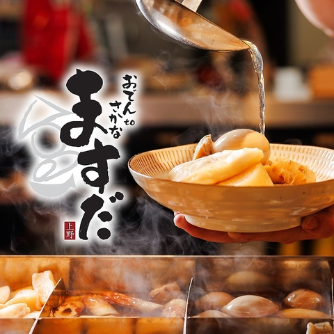
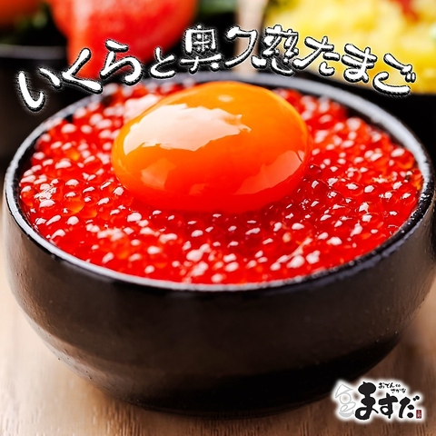
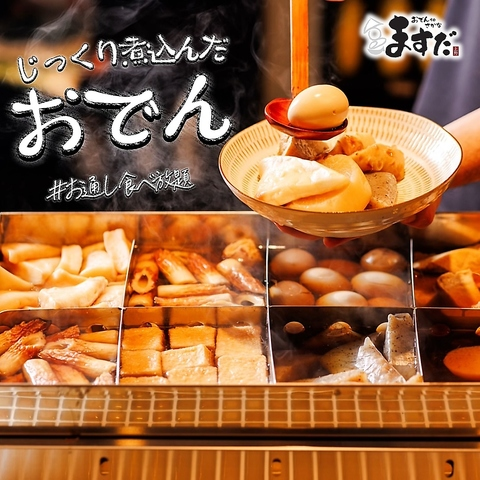
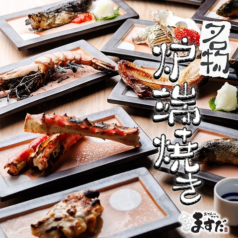
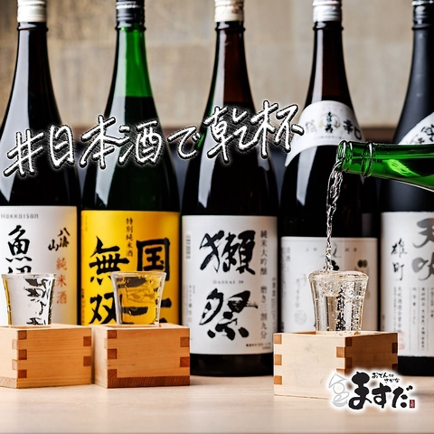
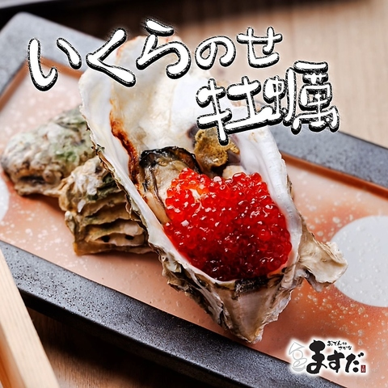
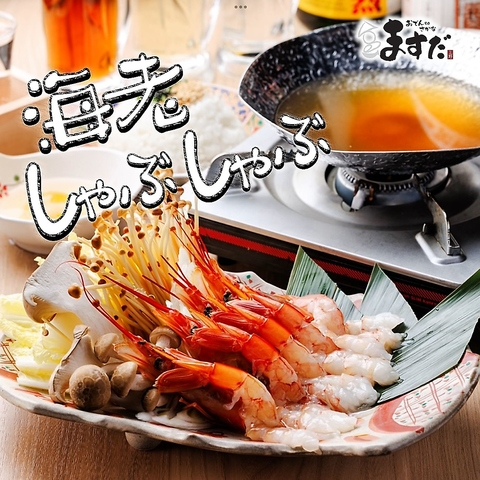
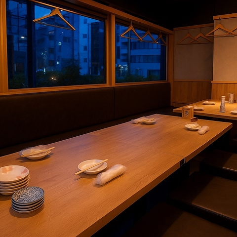
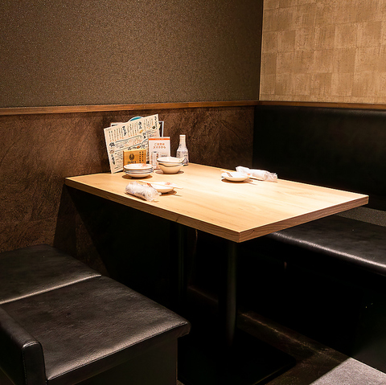
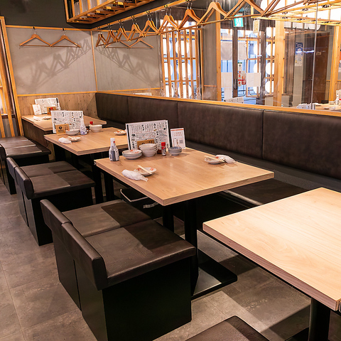

Galerie photos










Kevin, Loïc, May Nhia, Stéphanie, Estelle
Du 5 Avril au 27 Avril 2026
Izakaya local à Ueno autour de l'oden et du poisson grillé, simple d'accès depuis la gare et plus abordable qu'un buffet pour un groupe de 5.










Oden to Osakana Masuda est une adresse pratique pour un repas local à Ueno : poissons grillés, oden, salles privées, réservation en ligne et budget plus simple qu'un gros buffet.
Conversion indicative sur base 1 EUR = 183.67 JPY (BCE, 10/03/2026). Taux variable.